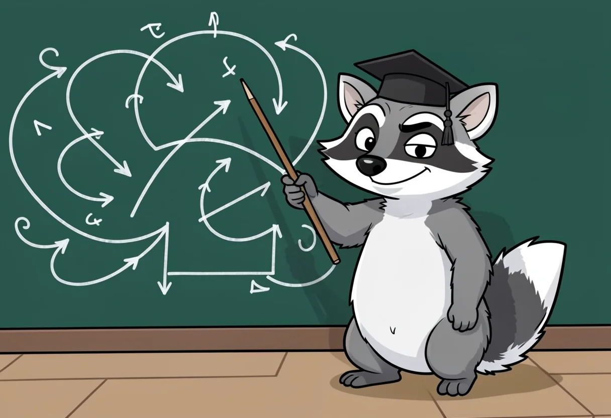
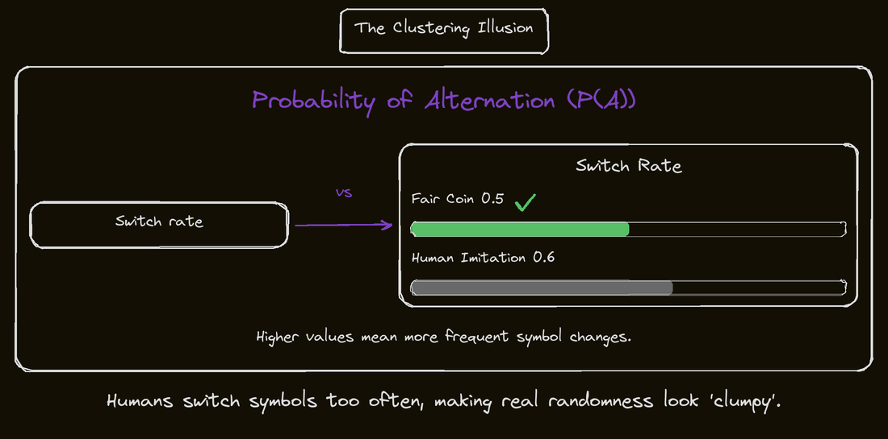

Domando el azar. Parte 1: ¿Con qué frecuencia el mero azar es el responsable de una racha de éxitos? La respuesta está en los dados de Cicerón.
Generado por IA: el texto, las imágenes y otros contenidos de esta página se crearon con inteligencia artificial y pueden contener errores.
Actualizado el 2026-10-28: corregimos errores de contenido en esta página.
¿Por qué una racha de 22 victorias consecutivas, una serie de 17 derrotas seguidas o una serie de coincidencias pueden ser algo común, con qué frecuencia el azar las provoca y cuál es la pregunta clave para distinguir la suerte de la causalidad?
Taming Chance. Part 1: How Often Does Chance Alone Build Streaks? Cicero's Dice Answer
Why a 22-game winning streak, a 17-round losing run or a cluster of coincidences can be ordinary, how often chance builds them, and one question that sorts luck from cause.
A 22-game winning streak looks too neat to be luck, yet chance alone builds long runs more often than instinct allows. How do you tell a real cause from a streak that simply arrived?
TL;DR: the conclusions, if you want them now
- Long streaks are what chance normally produces; a run that feels too neat to be luck can come from a fair coin.
- People imitating randomness switch symbols too often, about 0.6 instead of 0.5, so honest randomness looks clumpy and suspiciously caused.
- The expected longest run grows slowly: it rises by about one each time the number of rounds doubles.
- In one 50,000-round even-odds game, the expected longest losing streak was 17, and an audit found 16.
- Before crediting a cause, ask how many chances the streak had to appear, then count how often a run this good turns up.
Who this is for
- Analysts and managers who credit a process, hire or tool for a good run: it shows how to check whether a streak needs any cause before credit, blame or budget lands on it
- Sports and gambling fans who read streaks as hot hands or curses: it explains how often chance alone builds long winning and losing runs
- Teachers and sales leaders judging weeks, regions or classes: it offers one bookkeeping question that sorts luck from cause
- Readers curious about the history of superstition: it traces the argument back to Cicero and his brother at the dice table in 44 BC
A streak priced at one in 4.2 million

If you have ever credited a new process, hire or tool for a good run, or blamed a cause for a bad week, you may have been reading noise. Twenty-two heads in a row would make anyone suspicious of the coin, and Cleveland won 22 games in a row in 2017 [3]. If every game is treated as a fair coin flip, that run is priced at about one in 4.2 million [3]. The odds get cut in half 22 times, or 0.5 to the 22nd power [3]. Somewhere, a coin is being asked to do 22 consecutive favors and has not once asked for a day off. Real teams differ in talent, so a figure weighted for that would come out somewhat less extreme, though still startling. The streak ended at 22, an American League record, and only the 1916 Giants did better, with 26, a count that included a tie [3].
Does that number settle it? Most people feel it does. A run that unlikely seems too neat to be luck, so something must have caused it: a deep roster, a clubhouse that had found its rhythm, a manager with a gift, or at least a lucky jacket. Luck, by this reasoning, is supposed to look mixed, a win here and a loss there. Long unbroken lines look designed. The same instinct sits behind a manager crediting a new process for a strong quarter, or an analyst hunting for what changed after a bad week. Knowing when a streak needs no cause keeps credit, blame and budget from landing on the wrong thing.
Both sides
The clustering illusion is the tendency to mistake random streaks or clusters in small samples for non-random patterns.
The case for
The case for: 4 · The case against: 2 · weighted by evidence strength (3 measurement, 2 study, 1 argument)
The evidence leans toward it. A study comparing the statistical significance of observed clusters against a null hypothesis of pure randomness would settle if the patterns are truly non-random.
I held exactly that belief once, and with more confidence than I had earned. Early in my career, as a data analyst building win-probability models for a baseball club, I told a manager that our winning streak proved the new hitting coach's system was working. The coach's contract extension hung on the answer. My model gave the streak a probability; I gave it a biography. I said it in a meeting, with a chart, and the chart was lovely. The streak was real, and the cause I attached to it was a story I had not tested, which is the polite name for fan fiction. Writing this now, I feel the heat in my face that I felt when I later did the arithmetic.

Here is the arithmetic that started the heat. Ten heads in a row has a probability of about 0.098% [3], a long shot that we'd still expect every thousand or so attempts. Yet people sit at tables and watch ten heads come up, and they are surprised. They should be surprised by the feeling, not by the event. That feeling is the thing worth examining, and it has a name: the clustering illusion, the tendency to mistake the streaks and clusters that small random samples inevitably contain for something non-random [14]. Our brains, it turns out, run a very small detective agency with no cold cases.
The illusion has a mirror image. Asked to write down how forty tosses of a fair coin might come out, most people alternate far more often than a real coin does, and they cross out any run of five [15]. They edit the coin the way a nervous author edits a first draft. The human version of randomness is too tidy. A single page of forty proves little, since a real coin could now and then produce one that neat, but across many pages the habit shows, because chance rarely produces sequences with so few long runs [15]. I tried it myself, pencil in hand, and my page of forty looked gloriously random. I was pleased with it. No one could have convicted me on that page alone, which was the trouble: from the inside, my tidy page felt exactly like chance.
Once the idea that randomness looks evenly mixed is gone, one question takes its place, asked of any streak: how many chances did it have to appear? The Monday use is short. Before crediting a cause, an analyst, teacher or sales manager lists every window, rep, week or region that could have been examined, then sees how often a run this good turns up in that list. It is bookkeeping for miracles, and miracles dislike bookkeepers. Examples for sales, product, teaching and analytics wait at the end. The belief in tidy randomness has a cousin: the idea that a pattern needs a cause. That one is two thousand years old, and a Roman lawyer attacked it over a dice table.
Cicero at the dice table, 44 BC
I found the dialogue on a webpage that reproduces the 1923 Loeb Classical Library edition of Cicero's De Divinatione, and I read it the way I read most things after that meeting: looking for the person who had already lost my argument [7]. It turned out to be a conversation between two brothers. I had braced for a treatise. I got Thanksgiving. Marcus is Cicero, and Quintus is his only brother [8].
Quintus plays the believer. He lists the signs that nations act on, from the entrails of sacrificed animals to lightning, thunder, augurs, astrologers and oracles [8]. Rome's early-warning system ran on guts, weather and professionals who charged by the prophecy. His sharpest move comes at the dice table. Certain numerical outcomes, he argues, cannot be mere chance, and he asks: "Can anything be done by chance which has in itself all counts of truth [8]?". That was my line in the meeting, in Roman dress. A pattern this good must mean something.

His case had history behind it. The Romans had gradually brought the art of soothsaying in its entirety from Etruria [6]. Reading signs was an inherited craft, closer to a family firm than a superstition. Nor was Rome alone: around 1100 B.C. in China, fortune tellers heated turtle shells until they cracked at random, then interpreted the cracks [13]. The shell did the random part. The humans supplied the confidence. Cracks in a shell and spots on a die share a weakness, which is that random marks look a lot like writing to anyone hoping for a message.
A meme about this

THE EAGLE PREDICTED THE COLLAPSE PERFECTLYIF YOU SKIP EVERY TRIP WHERE NOTHING FELLWhat strikes me most is where this argument took place. Dice gambling was common in Rome two thousand years ago [10]. The most skeptical case about luck came from a society with abundant practice at losing money to it. Nobody at that table needed a lecture on streaks. They had paid tuition.
I had spent a career building models, and finding my best point already made two thousand years earlier, without a spreadsheet, stung in a particular way. My models had error bars. His had a toga. It was the heat of being corrected by a man who never saw a box score.
Quintus's best evidence is not a dice roll at all. It is a story. King Deiotarus set out on a carefully planned journey, turned back because of an eagle's flight, and the room where he was to stay collapsed the next night [8]. The eagle got a perfect season; its record for the other nights was not kept. A king cancels a trip over a bird, the ceiling falls on an empty bed, and everyone who hears it files the eagle under prophecy: the sort of story that makes believers, and one that never mentions the many kings whose eagles said nothing and whose rooms stayed up.
Inventing randomness: where people go wrong
I tried the forty-toss exercise on myself before I trusted anyone else with it. Test subject, researcher and, as it turned out, the faulty equipment. Forty fair coin tosses, written as H and T on a legal pad, no coin allowed. I crossed out a run of five. I remember being pleased with how convincing the page looked.

Tap a panel to explain it.
- Probability of Alternation (P(A)): Humans tend to over-alternate, which makes true random sequences look like they have suspicious streaks.
The measure that catches this is simple, and a short made-up case shows it. On a scrap of paper I wrote H T H H T. That is five symbols and four transitions, the gaps between neighbours. The symbol changes at three of them: H to T, T to H, and H to T again. The only pair that stayed loyal was the middle H H. Three changes over four transitions gives 0.75. Researchers call this the probability of alternation, written P(A): the number of changes of symbol divided by the number of transitions [15].
A fair coin gives about 0.5 [15]. Falk and Konold found that people asked to produce randomness prefer a value near 0.6 [15]. Asked to be unpredictable, people turned out to be predictably over-eager. A production task with no starting stimulus, where 100-bit sequences came out at a switch rate of 0.68, pushed the rate higher [15]. The imitation coin behaves like someone who cannot stay in a chair, up and down every few seconds, convinced that sitting still would look suspicious.
The strangest case is a string I found while reading about this: OXXXOXXXOXXOOOXOOXXOO.
The gap between 0.5 and 0.6 sounds tiny. It is the whole misconception in numbers. A mind that expects 0.6 reads a genuine 0.5 as clumpy, and clumps look like causes. Real randomness is streakier than the imitation, so every honest streak seems to come from somewhere, usually the nearest coach.

The strangest case is a string I found while reading about this: OXXXOXXXOXXOOOXOOXXOO. Most people call a sequence like OXXXOXXXOXXOOOXOOXXOO non-random [16]. I counted its switches on the back of a scouting report. Twenty-one symbols make twenty transitions, and the symbol changes at ten of them. That is 0.5, the fair-coin value exactly. The eye catches the opening rhythm of OXXX repeated, decides someone designed it, and never checks the switch rate. A fair coin could have written it, and my gut, which has watched thousands of innings, ruled otherwise within a second, with no appeal and no replay review.
Tap a step to see what happens there.
That stung, because it is the same ruling I made about the hitting coach. I had been wrong in the same direction, with more confidence and a bigger spreadsheet. I looked at a run of wins, saw a rhythm, and called it a system. A person who spends days fitting models to noise still carries the same eye, and it does not announce itself.
Even the people who most needed randomness did not trust their own heads to make it. Some put the job in a machine, ran it for a while, and gathered the results into a book titled A Million Random Digits with 100,000 Normal Deviates [13]. The 'Normal Deviates' in the title are, I have checked, numbers, not the staff. The RAND Corporation, it turns out, had to print a million digits because a person left to improvise would sit down, stand up, and sit down again.
How long a run should 50,000 coin-like rounds contain?
I opened a spreadsheet with a simple question: how long a run should chance alone produce? Spreadsheets are where my certainty went to be audited. The first thing I needed was a unit of chance small enough to count. A Bernoulli trial is a single experiment with exactly two possible outcomes [4]. A coin flip is one. So is a baseball game, if I squint and ignore extra innings, and so is a round of a gambling game that either pays or doesn't. String enough of them together and the Binomial Distribution models how many successes turn up in a fixed number of independent trials [4].
Then came the part that stung. Say twenty flips come out H T T H H H T H T T T T H H T H T H H T. I made that sequence up, but it is the kind I would once have called suspicious. I was, in effect, suspicious of my own handwriting. It holds a run of four tails and a run of three heads. A real twenty-flip sample will almost certainly show streaks of 3 to 4 in a row [17]. Spotting a streak of four, I had always assumed, meant that something was pushing. Here the push was a coin.
With more rounds, the streaks get longer, but slowly. When the rounds double, the longest run grows by about one more [2]. That doubling rule is the Erdős–Rényi Law of Long Runs, which says the expected length of the longest run of identical outcomes increases logarithmically with the number of rounds played [2]. "Logarithmically" here means one extra step each time the rounds double. The record keeps rising, yet each new step costs far more rounds than the last. I had expected a long game to breed monster streaks. It breeds only slightly taller ones, like a garden that promised a jungle and delivered a hedge. So the longest run never stays small, and it never explodes either.

The numbers I found made my old certainty look sillier, though they come from a gambling operator's own material, so I read them the way I'd read a vendor's brochure. The game is a simple one: even odds on each round, with a 2.00x payout for a win. Over 50,000 rounds, the site puts the expected longest losing streak at 17 [2]. Its own audit of 50,000 rounds found 16 [2], and I like to picture the auditor writing "within tolerance" beside the most miserable sixteen rounds imaginable. The site calls a 17-round streak "a mathematical certainty" [2], which oversells it. An expected maximum is the typical case, and the audit's 16 landed right beside it.
I thought about what a losing run of 17 would feel like from inside it. Seventeen times in a row, the thing you expected to go your way doesn't. By the ninth, you have started negotiating with the table. Nobody living through it would call it arithmetic. They would call it a curse, a bad table, a sign. An 8 to 12-round losing streak is highly probable over a few hundred rounds, and people who accept this insulate themselves from the shock [2]. Shock was exactly what I felt when I ran my own team's winning stretch through the same lens and found nothing a coin couldn't do.
What bothered me most was the scale of the pile. I had been treating each streak as a lone event, when it was one draw from a very large bag, and long runs are what a large bag of draws contains. Asking a large bag why it contains a long run is like asking a library why it contains a typo. The coach's system had never needed to be a cause. It only needed to arrive in the pile.
Even so, the streaks I found in the spreadsheet still looked like messages to me, and I was a person who knew better. Knowing better and feeling better turned out to be two separate departments. What would they have looked like to a city with no spreadsheet, frightened and at war? If chance builds runs this long, why did a whole city once read them as the work of spies?
Spies, rockets and a brain built for false alarms
Londoners in 1940 noticed that some neighbourhoods were bombed again and again while others were spared [17]. Residents concluded that German spies were steering the raids [17]. I understand the reasoning completely, because I had made the same move in a clubhouse with a spreadsheet open: a pattern this lopsided had to have a hand behind it. The spreadsheet had conditional formatting, which made my mistake look professionally colour-coded.
Then, a few years on, R. D. Clarke ran the numbers. The bombing pattern he examined was consistent with a random distribution [17], and his 1946 work on V-2 rocket impacts reached the same verdict, a close fit to randomness [14]. Randomness, it turned out, had a better alibi than espionage. The scatter that looked like a spy's map was the scatter blind chance draws, and a spy would have been the less likely explanation.
Why do the clumps look so deliberate? Part of the answer is that people expect too little variety. The illusion comes from a tendency to underpredict how much variability turns up in a small sample of random data [14]. Daniel Kahneman and Amos Tversky traced that misjudgment to the representativeness heuristic [14], a mental shortcut that expects a small sample to resemble the process behind it. A fair coin is supposed to look evenly mixed, so an uneven handful of bombs looks rigged. The coin in our heads is a polite dinner guest who always takes turns. The clustering illusion also draws on confirmation bias [16].
Underneath sits an older habit. The human brain is a pattern-detection machine that evolved this way because spotting patterns helped people survive [17]. The cost of that design is easy to reason out. If a rustle in the grass is a predator one time in fifty, a brain that flinches at every rustle is wrong forty-nine times and alive on the fiftieth. A brain that waits for proof is right forty-nine times and eaten once. A superb accuracy record, and a very short career. Evolution does not grade on accuracy. I find this a comfort and an insult at once, since it means my pattern-hunting was a feature working exactly as built. It just happened to be pointed at batting averages.
A meme about this
Wartime Britain supplies a second case. Military codewords such as Dieppe, Omaha, Utah and Mulberry appeared in the Daily Telegraph's crosswords before the operations that carried those names [16]. The setter, a school principal by day, was suspected by the intelligence service and questioned [16]. So for a while the prime suspect in a national security scare was a man whose crime was possessing a vocabulary, and the real culprit was arguably the dictionary.
I think about him more than I expected. I picture a principal bent over a crossword, pencil in his teeth, hunting for a five-letter word, while a spy hunt gathered around him built on nothing but words that happened to match. The pencil, to be fair, was never questioned.
Six teams, 2,526 chances
I used to be sure that baseball history holds almost no ten-game opening streaks. A fair coin comes up heads ten times running with probability 0.5 to the tenth power, about 0.098% [3]. One in a thousand, give or take. A team that opens 10-0, I would have said, has to be something special, and early in my career I said very nearly that to a manager, with a straight face and a laser pointer, which lent the error a certain production value.
Real teams are not fair coins, which is the first correction. Team talent in baseball has historically followed a normal distribution centered on a .500 winning percentage, with a standard deviation of .072 [3]. Some teams are heavily weighted coins, some are weighted the wrong way. Averaging the streak odds across that whole spread gives about 0.22% for a ten-game winning streak [3]. That is a bit more than double the fair-coin figure, and still firmly in the category I would have labeled "almost never," a category I kept in good repair from heavy use.
Then comes the count. Since the American League became a Major League in 1901, there have been 2,526 team-seasons [3]. Multiplying 2,526 by 0.0022 gives about 5.5 [3]. It is rare for a decimal to be this blunt with a person holding a laser pointer. Five or six such openings should exist.
Six do: the 1955 Dodgers, the 1962 Pirates, the 1966 Cleveland club, the 1981 A's, the 1982 Atlanta team and the 1987 Brewers [3]. I checked the multiplication twice, the way a person rechecks a restaurant bill that has come out exactly right.
What most people betA reader would bet that a ten-game opening streak, a roughly one-in-a-thousand event for a coin, is so rare that baseball history should hold almost none and each one must reflect something special.Turn the card
What actually happensAcross 2,526 team-seasons, a 0.22% average probability implies roughly five or six such streaks, and six teams have done it. Rare per attempt, expected in total.
What I felt was not wonder at first. It was heat in the ears, the kind a laser pointer cannot be blamed for. Each of those streaks is rare per attempt, and rare per attempt had been the only lens I owned. The unlikely event turned out to be the expected one, arriving on schedule, and I had once handed a manager a story about a hitting coach's system while the schedule was running in the background.
The opening of a season is also only one doorway. A .500 team will have, on average, about 77 opportunities to begin a winning streak of at least ten games [3]. Seventy-seven. I counted that number out loud, in case saying it slowly would make it smaller. The sport deals streaks like a dealer who cannot stop shuffling, and nobody at the table is surprised when a good hand eventually lands, except the person who sat down expecting every hand to look mixed.
Some of those streaks surely came with real causes, and the arithmetic cannot say which. Arithmetic is an honest witness and a useless detective. It says only that the pile of streaks needs no cause to exist. The same arithmetic that excuses a streak also explains why people hunt for clusters in other fields, because anywhere there are thousands of tries, something improbable is waiting to be found and admired.

Hot hands, clusters and the sharpshooter
I said it with total confidence and a slide to match. Having since done the counting, I treat that slide as a museum piece: a confident analyst, a small sample, and a font size chosen to discourage questions.
The Texas sharpshooter fallacy is the version of this in reasoning: differences in the data are ignored and similarities overemphasized.
Basketball got there first. Thomas Gilovich showed that basketball fans firmly believe in the "hot hand," the idea that a player who has made several shots in a row is more likely to make the next one [17]. When the actual shooting data was analysed, no hot hand effect appeared [17]. The study by Gilovich, Vallone and Tversky identified those runs of makes as explainable by chance [16]. Chance, it seems, can sink a long run of shots without ever attending practice. I read that as a young analyst and felt vindicated on behalf of arithmetic. Then I felt less vindicated, because I had been on the fan's side of it.
The story did not stop there, and I like that it didn't. More recent research on a much broader body of data points to a real hot-hand effect, with a raised hit probability of 1.2 to 2.4 percent [16]. A hot hand, then, that would barely warm a cup of coffee. So the fans were not hallucinating a phenomenon. They were hallucinating its size. A sliver of improvement, tucked inside enormous swings of ordinary luck, turned into a shooter who "can't miss." Counting the chances did two jobs at once: it deflated the legend and it kept a small truth from being thrown out with it.
Disease clusters carry the same trap at higher stakes. The leukemia cases in the Elbmarsch region were linked by some to nearby nuclear power plants, and the episode is cited as an example of how a pattern that felt non-random can be over-read, while its cause remained contested and was never conclusively linked [16]. Investigating clusters is hard, and now and then such an investigation does find a real cause. I can understand the pull. Cases bunching on a map look like a signature, and the eye that spots a face in a cloud does the same job here, since pareidolia, seeing faces on objects, is one variant of the clustering illusion [16]. A signature, but with no one holding the pen. Pareidolia and apophenia (finding connections in unconnected things) are the general forms of this erroneous pattern recognition [14]. A family on the affected street can spend years afraid for their children and wondering whether to sell the house, on a pattern that chance alone could have drawn, while the same lack of counting could just as easily make a town overlook a real cause.
The name for the mistake comes from a Texan farmhand. He fires a shotgun at a barn wall, walks up to the tightest bunch of holes and paints a bullseye around them. The Texas sharpshooter fallacy is the version of this in reasoning: differences in the data are ignored and similarities overemphasized [14]. Every hot-hand believer, every spy-hunter and every analyst with a slide deck owns a very good paint budget.
The trouble with a drawn target is that it looks identical to a real one. Only the order of events differs, and the order is exactly what a pattern conceals once it has been spotted. A genuine signal names its target before the shots are fired, or at least admits how many walls, how many barns and how many holes were available to paint around. An honest sharpshooter, in other words, shows the whole farm. So what single question would have saved the spy-hunters, the hot-hand believers and the cluster-drawers?
A habit worth one sentence: how many chances?
What cured me was a habit of asking how many chances there were. It is a cheap cure, with no side effect beyond being less fun at parties. The streak had been one of many possible windows across a season, and some window was bound to look like a story. The ten-game openers looked like miracles until the 2,526 team-seasons were counted: about five or six were expected, and six happened [3]. Six against 5.5 is a crowd exactly the size chance would send, and no miracle needed to buy tickets.
The same count works on the feeling in my gut, which I still get. After ten losing rounds in a game of pure chance, the human brain screams that a win is "overdue" [2], as if luck kept a ledger and the bill had come due. That scream has a name, the gambler's fallacy, a misunderstanding of chance streams [14]. The game I had in mind was a casino game built on a Provably Fair hash, and the source I leaned on puts it flatly: "the Provably Fair hash has no memory" [2]. It is the one thing in the casino that cannot hold a grudge, though the player's brain will happily hold one on its behalf. Ten losses ago is, to the formula, another country.
The second half of the habit is starting from the base rate, the plain background odds before any evidence arrives. A flu example shows why. In it, the chance of being infected starts at 1%, the strain causes headaches in 80% of infected people, and about 10% of healthy people have one on any given day [19]. I run it on 1,000 people. Ten are infected, and 8 of them have a headache. Of the 990 healthy people, about 10%, or 99, have one too [19]. Ninety-nine healthy people, all innocent, all holding the same exhibit. A headache therefore comes from an infected person in 8 cases out of 107, about 7%. The symptom feels like a verdict, and the starting count says it is mostly an ordinary Tuesday. Reverend Thomas Bayes formalized this way of thinking in the 18th century [19].
Guessing gives the same lesson from the other side. On a quiz, the chance of getting all five answers right by luck alone is "a little less than a 1 in 1000 chance" [4]. That sounds like proof of knowledge until a few thousand people sit the test, at which point a handful of perfect scores is what chance delivers on schedule. A perfect score is a very good grade and a very poor witness.
So I changed what I do when a pattern shows up. I now ask how many windows, players, weeks and stats were available before the pattern was chosen. The answer is usually "plenty," which is rarely what a slide wants to hear. A person at a table, ten losses deep, asks what the process remembers (nothing) and what the starting odds were. The decision made after counting is often the opposite of the one made on the feeling.
Streaks, repeats and coincidences are what randomness normally looks like once there are enough chances. The urge to say "this must mean something" is a poor guide, and "how many chances?" is the better first question. But "enough chances" is a vague phrase, and a vague phrase is little use to a model builder. If chance makes patterns on its own, can we say exactly how often? The first genuine mathematics of probability appeared when mathematicians started thinking carefully about gambling and games of chance [10]. Mathematics, in other words, was born in the back room of a card game.
Who can use this
A sales manager who sees six strong weeks after a new call script arrives first counts the chances. In a spreadsheet exported from the CRM, with one row per rep per week for the past half-year, the rows add up fast. The manager then slides a six-week window along every stretch before the script and checks how often the team had a run that good with no script in sight. Somewhere in that spreadsheet, a rep was always going to have a great month; the script just happened to be standing nearby. A coin flipped ten times lands heads every time about 0.098% of the time [3], and a rare outcome like that still turns up once enough coins are flipped. The script earns credit only if the post-script six weeks sit above nearly every earlier window from the same team.
A product manager facing three bad reviews in one day opens the dashboard and reads the daily average, then counts the days in the quarter. If the product normally collects one bad review a day, ninety days give ninety chances for a cluster, and a three-review day turning up more than once would surprise nobody. So the manager pulls the daily bad-review counts for those ninety days and finds the highest count reached on at least five of them, the product's normal worst day. Only a day that beats that number goes to the engineers as a possible defect, with the day's count and the baseline attached. The rest are allowed to be Tuesdays.
A high-school teacher sets up a small contest. One group of students writes forty invented coin tosses from imagination, and a second group flips real coins forty times. On the board go two tallies per sheet, the longest run and the number of switches between heads and tails. Human forgers tend to be nervous about repeating themselves, which is a poor quality in a coin. The class then guesses which sheets are fake before anyone says.
An analyst who finds a striking cluster on a map writes down a list before saying anything about it: every region, week and product category that could have been examined, and how many of those cells would look this extreme by luck alone at the chosen threshold. The cluster is then judged against all the places it might have appeared, including the one where it did. A team lead reviewing weekly numbers does the same on Monday morning, before moving staff or budget toward a hot region. I once credited a hitting coach with a winning streak, which is why I remember the 22-game run by Cleveland, which a coin would match with odds of about one in 4.2 million [3]. That figure belongs to one named team in one named stretch, so I ask how many other stretches I could have been staring at instead. Cleveland got the headline; the other stretches, like most of the league, got a quiet Tuesday. One in 4.2 million sounds like a lottery ticket until I remember how many tickets the league prints every season. The counting happens on a list I keep taped inside my notebook.
What we don't know
- The 4.2-million figure treats each game as a fair coin flip. Real teams differ in talent and games are not identical, so the figure is an approximation rather than an exact price.
- Researchers disagree on the hot hand: the original basketball analysis found it explainable by chance, while recent work suggests a small effect of 1.2 to 2.4 percent.
- Quintus appears only as Cicero wrote him, so we know the argument in the dialogue, not what the real brother believed.
- Dates and places for the oldest dice vary: one account gives roughly 2800 to 2500 BC, another a tomb of the 24th century BC, and the origin may lie in the Indus valley or Iran.
- Switch rates vary by study: about 0.52 to 0.63 for stimuli and 0.68 in one 100-bit production task, so the preferred alternation is a range rather than a fixed number.
Simplifications we made
- Games, rounds and reviews are treated as independent coin-like trials, which real sports, markets and audiences are not exactly.
- The Erdős–Rényi law of long runs is described only through its logarithmic growth, without the mathematics.
- The expected count of ten-game opening streaks is a rough multiplication of the average probability by the number of team-seasons, not a full calculation.
- The article does not claim that patterns are never real; it only argues that the feeling of meaning is a poor test.
Next in this series
If chance builds patterns on its own, can anyone say exactly how often? Two French mathematicians, handed a gambling puzzle about an unfinished game, were about to give the first answer.
Sources
- The Sharp's Guide to Crash Streaks: Why Drawdowns Never Alter ...
- The Probability of Streaks | The Hardball Times - FanGraphs
- 5.3: Discrete Distributions- Bernoulli and Binomial/05%3A_Probability_Distributions/5.03%3A_Discrete_Distributions-_Bernoulli_and_Binomial)
- LacusCurtius • Cicero - De Divinatione: Book I
- LacusCurtius • Cicero - De Divinatione: Book II
- Cicero/Quotes from Cicero's de Divinatione - Wikiversity
- Feeling Lucky? A Brief History of Gambling with Dice - Literary Hub
- A Brief History of Random Numbers - Carl Tashian
- Clustering illusion - Wikipedia
- Clustering illusion - replicated | Bias Atlas - Conyso
- Clustering-Illusion - Wikipedia
- Clustering Illusion - ThinkingKit
- Bayesian Thinking in Machine Learning: A Practical Intro
Further sources consulted (7)
- Random Walk Properties - Cornell Math Department
- BitBrain and Sparse Binary Coincidence (SBC) memories - Frontiers
- Playing with the Gods: Materiality of Religious Communication and ...
- History of randomness - Wikipedia
- Ancient Logic - Stanford Encyclopedia of Philosophy
- Monte Carlo Solver - QuTiP 5.4 Documentation
- Gemini Zodiac Sign - Astrology Answers
Fuentes
- Random Walk Properties - Cornell Math Department
- The Sharp's Guide to Crash Streaks: Why Drawdowns Never Alter ...
- The Probability of Streaks | The Hardball Times - FanGraphs
- BitBrain and Sparse Binary Coincidence (SBC) memories - Frontiers
- LacusCurtius • Cicero - De Divinatione: Book I
- LacusCurtius • Cicero - De Divinatione: Book II
- Cicero/Quotes from Cicero's de Divinatione - Wikiversity
- Playing with the Gods: Materiality of Religious Communication and ...
- Feeling Lucky? A Brief History of Gambling with Dice - Literary Hub
- History of randomness - Wikipedia
- Ancient Logic - Stanford Encyclopedia of Philosophy
- A Brief History of Random Numbers - Carl Tashian
- Clustering illusion - Wikipedia
- Clustering illusion - replicated | Bias Atlas - Conyso
- Clustering-Illusion - Wikipedia
- Clustering Illusion - ThinkingKit
- Monte Carlo Solver - QuTiP 5.4 Documentation
- Bayesian Thinking in Machine Learning: A Practical Intro
- Gemini Zodiac Sign - Astrology Answers